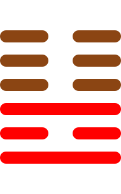

第三十六卦
明夷卦

卦辞
利艰贞。
明夷卦象征光明受伤、韬光养晦与隐藏。卦辞意为：利于艰难中坚守正道。明夷卦教导我们在光明受损时要学会隐藏智慧，等待时机。
彖传
明入地中，明夷。内文明而外柔顺，以蒙大难，文王以之。利艰贞，晦其明也，内难而能正其志，箕子以之。
彖传说：明入地中，就是明夷卦。内文明而外柔顺，以蒙大难，文王以此。利艰贞，是隐藏其明，内难而能正其志，箕子以此。
象传
明入地中，明夷。君子以莅众，用晦而明。
象传说：明入地中，就是明夷卦。君子应当效法这种精神，临于众人，用晦而明。光明入地象征隐藏，要含蓄处世。
爻辞
初九：明夷于飞，垂其翼。君子于行，三日不食。有攸往，主人有言
明夷于飞，垂其翼。君子于行，三日不食。有攸往，主人有言。
初九爻位于最下方，开始受伤。像受伤的鸟飞行，垂着翅膀。君子在行路中，三天不吃饭。有所往，主人有言语。
六二：明夷，夷于左股，用拯马壮，吉
明夷，伤于左股，用拯马壮，吉祥。
六二爻得中得正，伤而不重。光明受伤，伤在左股，用健壮的马拯救，吉祥，表示能得救助。
九三：明夷于南狩，得其大首，不可疾贞
明夷于南狩，得其大首，不可疾贞。
九三爻阳刚得位，有所收获。光明受伤在南狩，得到大的首级，不可急躁坚守正道，表示有收获但要谨慎。
六四：入于左腹，获明夷之心，于出门庭
入于左腹，获明夷之心，于出门庭。
六四爻接近君位，深入核心。进入左腹，获得明夷的核心，从门庭出去，表示深入了解后离开。
六五：箕子之明夷，利贞
箕子之明夷，利于坚守正道。
六五爻居中尊位，如箕子。箕子的光明受伤，利于坚守正道，表示圣贤的隐忍。
上六：不明晦，初登于天，后入于地
不明晦，初登于天，后入于地。
上六爻位于极点，不明而晦。不明而晦暗，起初登天，后来入地，表示由明转暗的过程。